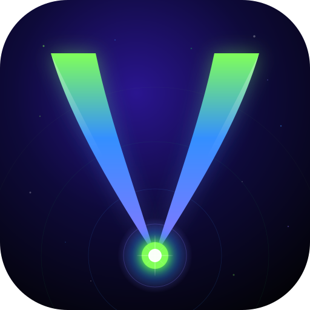

VasculApp
Acceso vascular · Enfermería
Escanea para instalar
¿Cómo instalar?
Android
Abre el enlace con Chrome → toca "Añadir a pantalla de inicio" en el banner o menú ⋮
iPhone / iPad
Abre con Safari → toca Compartir ⬆ → "Añadir a pantalla de inicio"
🔗 zarasrage.github.io/VasculApp